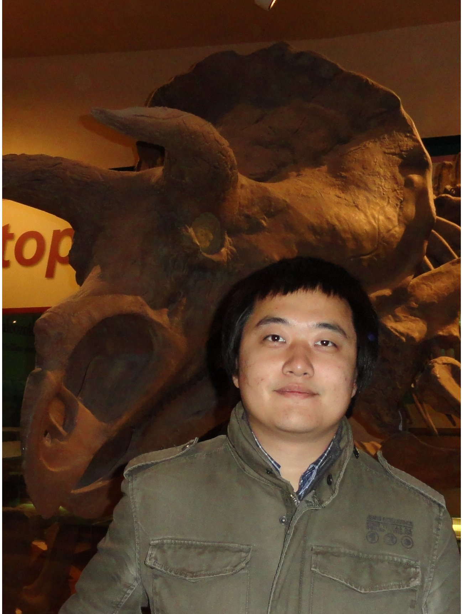

About Me - Xin Qi
I am Software Engineer II at Microsoft Azure App Insights team in Redmond, WA. I received my Ph.D. degree in Computer Science from College of William and Mary, working with Prof. Gang Zhou. Before that I received my M.Eng. degree in Pattern Recognition and Intelligent Systems from National Key Laboratory of Pattern Recognition at Institute of Automation, CAS, and my B.Sc. degree in Computer Science from Nanjing University.
I work on App Insights, Microsoft Azure's application performance management and instant analytic service. Before Microsoft, I worked on the management and control backends of VMware's network virtualization product, NSX. [Google Scholar Citations]
Contact
Email: xqiATemailDOTwmDOTedu
News
- [Career] Oct. 9th 2017 - I join Microsoft as Software Engineer II, Redmond, WA.
- [TPC] Sep. 9th, 2017 - I am invited to serve in the TPC of IEEE Percom WiP 2018!
- [Patent] Sep. 6th, 2017 - A Patent of IPFIX Firewall in Network Virtualization Environment has been filed at VMware!
- [Patent] Aug. 18th, 2017 - A Patent of IPFIX Switch in Network Virtualization Environment has been filed at VMware!
- [Career] July, 2017 - I am promoted to Senior Member of Technical Staff at VMware, Palo Alto, CA.
- [Paper] Oct. 27th, 2016 - One paper is accepted by IEEE THMS!
- [Patent] Oct 28th, 2016 - A Patent of Monitoring and Optimizing Interhost Network Traffic has been filed at VMware!
- [Talks] Sep. 14th, 2016 - I give two talks at VMware MOOSECON 2016, Atlanta, GA.
- [Talks] Aug. 25th, 2016 - Two talks are accepted by VMware MOOSECON 2016!
- [TPC] Aug. 10th, 2016 - I am invited to serve in the TPC of IEEE Percom WiP 2017!
- [TPC] Jul. 2nd, 2016 - I am invited to serve in the TPC of IEEE ICPADS 2016!
- [Paper] Jul. 1st, 2016 - One paper is accepted by IEEE WiMob!
- [Paper] May 18th, 2016 - One paper is accepted by IEEE TMM!
- [Talk] May. 11th, 2016 - I present my paper at VMware RADIO 2016, San Francisco, CA.
- [Honor] Apr. 27th, 2016 - I receive Outstanding Recognition Award from VMware!
- [Paper] Mar. 21st, 2016 - One paper is accepted by IEEE ICDCS 2016!
- [Paper] Mar. 18th, 2016 - One paper is accepted by VMware RADIO 2016!
- [Career] Jun. 1st, 2015 - I join VMware as Member of Technical Staff III, Palo Alto, CA.
- [Paper] May 8th, 2015 - One paper is accepted by IEEE TSMC!
- [Patent] May 5th, 2015 - Patent US 9026819 has been granted!
- [Ph.D.] Mar. 31st, 2015 - I successfully defend my Ph.D. Dissertation, Williamsburg, VA.
- [Talk] Mar. 18th, 2015 - I present my LBVC paper at ACM MMSys 2015, Portland, OR.
- [Paper] Feb. 24th, 2015 - One paper is accepted by IEEE TPDS!
- [Honor] Feb. 18th, 2015 - I am awarded Student Travel Grant from ACM MMSys 2015!
- [Paper] Feb. 16th, 2015 - One paper is
accepted by ACM MobiSys 2015!
- [Paper] Feb. 11th, 2015 - One paper is accepted by IEEE TWC!
- [Paper] Dec. 9th, 2014 - One paper is accepted by ACM MMSys 2015!
- [Intern] Nov. 28th, 2014 - I have accomplished a Software Engineering internship with VMware at Palo Alto, CA!
- [Paper] Nov. 16th, 2014 - One paper is accepted by IEEE INFOCOM 2015!
- [Paper] Aug. 28th, 2014 - One 2-page poster paper is accepted by ACM Sensys 2014!
- [Intern] Nov. 28th, 2014 - I have accomplished an Android Development internship with Suning Commerce R&D at Palo Alto, CA!
- [Paper] May. 4th, 2014 - One paper is accepted by IEEE Internet of Things Journal!
- [Paper] Jan. 8th, 2014 - One paper is accepted by ACM TOSN!
- [Patent] Sep. 3rd, 2013 - Our patent (US Patent Application Serial No. 14/016,635) has been filed and is pending!
- [Paper] Jun. 18th, 2013 - One 4-page poster paper is accepted by ACM Ubicomp 2013!
- [Paper] May. 8th, 2013 - One paper is accepted by ACM Ubicomp 2013!
- [Talk] Apr.
10th, 2013 - I present my AdaSense paper
at
RTAS 2013, Philadelphia, PA.
- [Paper] Dec. 14th, 2012 - One paper is accepted by IEEE RTAS 2013!
- [Patent] Dec.13th,
2012 - Our patent (US
Patent Application Serial No. 13/715,076) has
been filed and is pending!
- [Talk] Dec. 5th, 2012 - I present my RadioSense paper at RTSS 2012, San Juan, Puerto Rico.
- [Talk] Oct. 5th, 2012 - I present my RadioSense paper at the Colloquium of Computer Science Deptartment, College of William and Mary.
- [Talk] Sep. 5th ~ 7th, 2012 - I present our SAPSM paper at Ubicomp 2012, Pittsburgh, PA.
- [Honor] Sep. 4th, 2012 - I am nominated for the 2012-13 Park Gradute Award at College of William and Mary.
- [Paper] Aug. 30th, 2012 - One paper is accepted by IEEE TPDS!
- [Paper] Aug. 1st, 2012 - One paper is accepted by IEEE RTSS 2012!
- [Paper] May 10th, 2012 - One paper is accepted by ACM Ubicomp 2012!